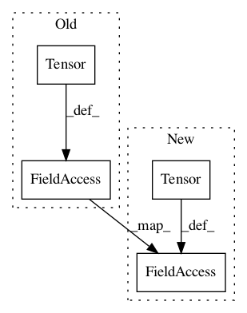

d35b8df03752363a70ddf4d30dda099d3e016958,examples/code_reuse_example/code_reuse_example.py,,,#,30
Before Change
compose_list = Compose([])
train_data = DataLoader(MultiTransformDataset(torch.Tensor(train_x), torch.Tensor(train_y), compose_list), batch_size=batch_size, shuffle=False)
test_data = DataLoader(MultiTransformDataset(torch.Tensor(test_x), torch.Tensor(test_y), compose_list), batch_size=batch_size, shuffle=False)
model_trainer = ModelTrainer(model,
loss_function=classification_loss,
After Change
batch_size = 32
train_x = torch.Tensor(np.random.random((n_instance, 50)))
test_x = torch.Tensor(np.random.random((n_instance, 50)))
train_y = np.random.randint(0, 9, n_instance)
test_y = np.random.randint(0, 9, n_instance)
print(train_x.shape)
print(train_y.shape)
encoder = OneHotEncoder()
encoder.fit(train_y)
train_y = torch.Tensor(encoder.transform(train_y))
test_y = torch.Tensor(encoder.transform(test_y))
compose_list = Compose([])
train_data = DataLoader(MultiTransformDataset(train_x, train_y, compose_list),
batch_size=batch_size,
shuffle=False)
test_data = DataLoader(MultiTransformDataset(test_x, test_y, compose_list),
batch_size=batch_size,
shuffle=False)
In pattern: SUPERPATTERN
Frequency: 3
Non-data size: 4
Instances
Project Name: keras-team/autokeras
Commit Name: d35b8df03752363a70ddf4d30dda099d3e016958
Time: 2019-08-20
Author: gabrieldemarmiesse@gmail.com
File Name: examples/code_reuse_example/code_reuse_example.py
Class Name:
Method Name:
Project Name: asappresearch/sru
Commit Name: 6acdbcfffa5674676dc88c94af3e555f3fa64d17
Time: 2019-10-22
Author: taolei@csail.mit.edu
File Name: sru/sru_functional.py
Class Name: tSRUCell
Method Name: __init__
Project Name: asappresearch/sru
Commit Name: fc850582ced2b873507493a7a6eafd7bcc9a24e2
Time: 2019-09-11
Author: taolei@csail.mit.edu
File Name: sru/sru_functional.py
Class Name: tSRUCell
Method Name: __init__